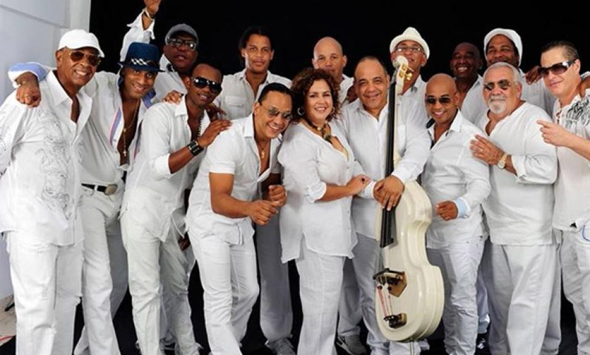
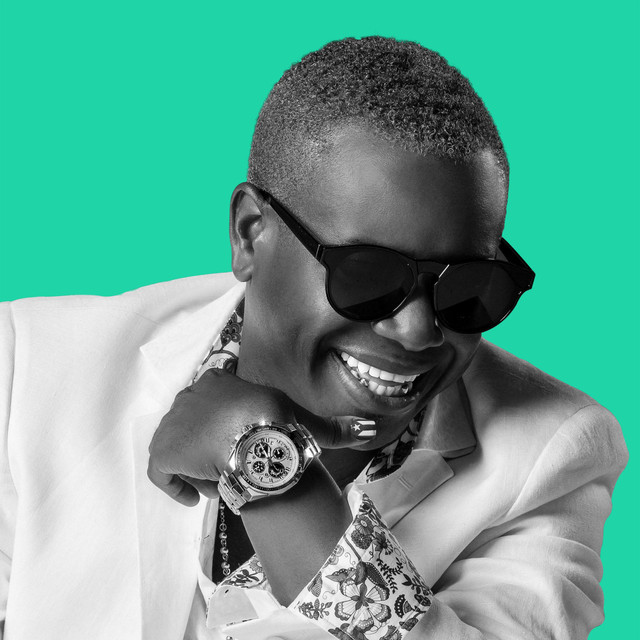
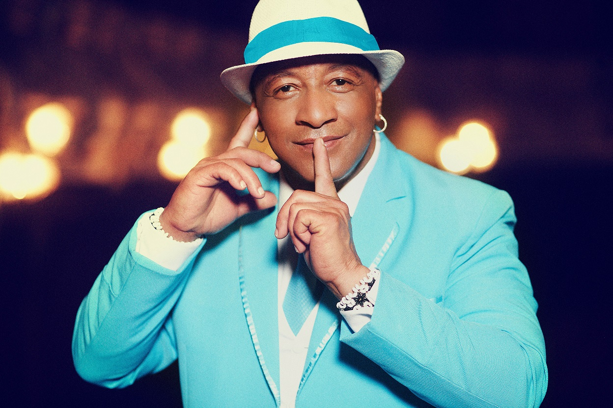

Grupo Niche
El Grupo Niche es una agrupación musical colombiana de salsa fundada en 1979 en
Bogotá, por Jairo Varela
y Alexis Lozano.En el año 1983 la agrupación se radicó en Cali.
Varela fue director del grupo hasta su muerte en 2012, así como su productor, compositor y
vocalista.
Alexis Lozano, quien tocaba el trombón y era arreglista, dejó la agrupación para formar la Orquesta
Guayacán. El Grupo Niche es considerado una de las agrupaciones salseras más importantes de América.
Sus álbumes han conseguido ventas millonarias y producciones como Llegando al 100% y A prueba de
fuego
lograron la certificación de doble disco de platino. Cielo de tambores, álbum de 1990, fue incluido
en
la posición n.º 21 en la lista "Los 50 álbumes esenciales de la música latina de los últimos 50
años"
elaborada por la revista Billboard.El álbum Propuesta fue nominado a los premios Grammy Latinos en
la
categoría "mejor álbum de salsa" en el año 2001.

Los Van Van de Cuba
Vital para el éxito y sonoridad peculiar de Los Van Van fue la trayectoria de su
director, Juan Formell. Antes de fundar Los Van Van, el 4 de diciembre de 1969, incursionó como
contrabajista, desde la Orquesta del Instituto Cubano de Radio y Televisión hasta varios grupos de
son y jazz. Su paso por la Orquesta Revé marcó un momento decisivo en la búsqueda del estilo que
quería alcanzar; puso a prueba su espíritu renovador brindando a la misma algunas soluciones sonoras
y de formato.
Formell incorporó el bajo, la organeta, la guitarra eléctrica, los violines y sustituyó la flauta de
cinco por la de sistema. El trabajo vocal se sustituyó por el montaje de voces propio de los
cuartetos. Esta experimentación sirvió de punto de partida para que, una vez creado Los Van Van, su
contagioso ritmo sentara pautas en la música popular bailable.

Tirso Duarte
Tirso Duarte es un cantante, compositor, pianista y arreglista nacido en La Habana
en 1978. Realizó sus estudios en el Conservatorio Amadeo Roldán y empezó su carrera profesional en
el teclado con Pachito Alonso.
Antes de crear su propio grupo, en el verano de 1998, cuando se produjo la separación de La Charanga
Habanera y la Charanga Forever, David Calzado lo recrutó como pianista del afamado grupo La Charanga
Habanera donde permaneció hasta el año 2001.
Posteriormente, fue cantante de NG La Banda (bajo la dirección de José Luis Cortés) y uno de los
miembros fundadores de la célebre banda de Pupy y Los Que Son Son.
En la actualidad, además de dirigir su propio grupo, La Sonoridad, Tirso Duarte también es miembro
de la Afrocuban All Stars, bajo la dirección de Juan de Marcos González.
Como composiciones famosas de Tirso Duarte, podemos citar: "Charanguero Mayor", "La Vecina", "Riqui
Rincón", etc.
Willie Colón
Willie Colón nació el 28 de abril de 1950 en El Bronx, Nueva York.Sus padres
eran puertorriqueños, pero fue criado por su abuela y su tía, quienes desde pequeño lo nutrieron de
música tradicional puertorriqueña y de los ritmos típicos del repertorio latinoamericano como el son
cubano y el tango. A los 11 años mostró predisposición por los instrumentos de viento, iniciándose
en el clarinete; posteriormente pasó a la trompeta, y finalmente el trombón, que fue el que lo
consagró. Se ha dicho que cambió la trompeta por el trombón al oír a Mon Rivera en su interpretación
de la bomba y la plena, siendo su referencia Barry Rogers.
Desde muy temprano aprendió a discernir entre las imágenes y adjetivaciones discriminatorias y
despectivas que se vertían sobre la comunidad latina y la cruda realidad de los inmigrantes en la
“Gran manzana”.
Gilberto Santa Rosa
Gilberto Santa Rosa Cortés (Santurce; 21 de agosto de 1962) es un cantante
puertorriqueño de salsa. Es apodado "El Caballero de la Salsa". Además de ese género tropical,
interpreta y canta baladas románticas y boleros.
Hijo de un dibujante de planos de ingeniería y de una operadora de las primeras computadoras IBM de
la isla, es ganador de 1 Grammy y 5 Latin Grammy Premios Grammy y ha vendido más de 3 millones de
copias en los Estados Unidos y Puerto Rico. Entre otras canciones conocidas son «Que alguien me
diga», «Si no me ven llorando», «Esas lágrimas», «Ni te llamo ni te busco», «Lluvia» con Tony Vega &
la Orquesta de Willie Rosario, «Pa' quererse no hay que verse», «Vivir sin ella», «Conciencia»,
«Perdóname», «Sin voluntad», «Pueden decir», «No quiero na' regala'o», «Sombra loca», «Me volvieron
a hablar de ella», «Que se lo lleve el rio», «Qué manera de quererte», «Conteo regresivo», entre
otras.
Victor Manuelle
Nació en Nueva York (Estados Unidos), hijo de padres puertorriqueños, el 27 de
septiembre de 1968, y se crio en Isabela, Puerto Rico, donde sigue viviendo. En 1985 se hizo conocer
como cantante gracias al descubrimiento de Gilberto Santa Rosa, tiempo después ha seguido cantando
con otros artistas de la salsa tales como Domingo Quiñones, Rey Ruiz, Puerto Rican Power, Eddie
Santiago, The Puerto Rican All Stars, Cheo Feliciano y Tito Allen. Desde 1993 ha grabado más de 19
discos, con lo cual ha vendido 10.000.000 de copias y en 1999, ganó el premio de Joven Salsero del
año.
Manuelle continuó cantando con muchos otros notables artistas de la salsa tales como Domingo
Quiñones, Rey Ruiz, Puerto Rican Power, Eddie Santiago, The Puerto Rican All Stars, Cheo Feliciano y
Tito Allen. Esta experiencia le abrió muchas puertas y, de nuevo con la ayuda de Santa Rosa, él
firmó un contrato de grabación con Sony Tropical.
Eddie Santiago
Empezó con varias agrupaciones como Conjunto Chaney, Generación 2000, Orquesta La
Potente, Orquesta Opus, y la Orquesta Saragüey. También fue corista del destacado salsero Frankie
Ruiz. En 1986 se lanza como solista y tiene gran éxito en la década de los años 80' y 90'. Se hace
famoso con canciones como Que locura fue enamorarme de ti, luego vienen exitazos como "Lluvia", "Tu
me quemas", "Todo empezó", "Nadie mejor que tu", todos temas de la autoría del cantante y compositor
argentino Luis Ángel Márquez que primero los graba en balada. También lanzó éxitos como "Antidoto y
veneno", luego canto a dúo y reeditó canciones con Huey Dunbar exvocalista del grupo DLG. En el año
2004 firma contrato con la disquera Musical Productions (MP) y graba "Después del silencio".
Jerry Rivera
Jerry Rivera nació en Humacao, Puerto Rico. Realizó sus estudios primarios y
secundarios en esa ciudad.
Sus padres eran músicos, lo impulsaron a convertirse también en un músico y ya desde niño acompañó a
su madre, Dominga (cantante) y a su padre Edwin (guitarrista y director de Los Barones Trío) durante
sus actuaciones. Su hermano mayor Edwin Rivera también es un reconocido artista de Salsa.
Sus cantantes favoritos son Eddie Santiago, Lalo Rodríguez y, en especial, Frankie Ruiz. En 1986,
cuando tenía 14 años, acompañó a su padre que estaba actuando en un hotel en Isla Verde, San Juan.
Frankie Ruiz, que estaba hospedado en el hotel, apareció y cantó un par de canciones con ellos y se
fotografiaron juntos. El 21 de octubre de 2003 dicha fotografía fue usada por Jerry como portada de
su disco tributo Canto a mi ídolo... Frankie Ruiz, que había muerto en 1998.
Maelo Ruiz
Maelo Ruiz nació en la ciudad de Nueva York, pero a la edad de 4 años se mudó con
su familia a Puerto Rico, de donde eran originarios sus padres. Comenzó en la música a la temprana
edad de 16 años cuando comenzó a cantar en la "Escuela Libre de Música de Caguas". Pero no fue
hasta la edad de 19 años cuando Maelo Ruiz realmente comenzó su carrera profesional en la música
cuando se convirtió en la primera voz de Pedro Conga y su Orquesta Internacional.
Permaneció con Pedro Conga durante 7 años, grabando 4 álbumes con la banda. Su mayor éxito con Pedro
Conga fue "No Te Quites La Ropa", que vendió más de 50 000 unidades y le ganó a la banda su primer
disco de oro en Puerto Rico. Los éxitos de seguimiento incluyeron "Atrévete", "Vicio" (disco de
oro en Colombia), "Quiero Volver", "Si Supieras", "Te Quiero Amor" y "Me Niegas Tanto Amor".

Javier Vasquez
Javier Vásquez Carabalí. Cantante colombiano de música tropical salsa, nacido el 26
de mayo de 1963 en la vereda Las Cañas del municipio de Puerto Tejada - Cauca. Se dio a conocer en
el mundo artístico al formar parte de reconocidas orquestas con las cuales obtuvo premios y
nominaciones dentro de las que se destacan la nominación a los Premios Grammy Latinos en 2001 con
el Grupo Niche; ganador del Premio Lo Nuestro en 2004 en la categoría “Tropical, Grupo Revelación
del Año” con la Orquesta Son De Cali y ganador del "disco oficial de La Feria de Cali" en 2011" ya
en su carrera como cantante solista..
Son de Cali
La suma de dos talentosas voces, el sabor de la conga, las trompetas y el timbal,
la particularidad de su golpe y bailar, fue una propuesta irresistible que ganó el reconocimiento de
los amantes de la buena música en marzo de 2002. Surgió así en el Valle del Cauca un son caleño, son
pal’mundo, pal’mundo entero, LA ORQUESTA SON DE CALI. Esta azucarera agrupación nació de la ilusión
de Willy García y Javier Vásquez,vocalistas de amplia trayectoria internacional, quienes querían
conformar su propia orquesta.
El reconocimiento a las leyendas de este género musical “Salsa Show 2002” fuela ocasión perfecta
para su lanzamiento. Se presenta al público LA ORQUESTA SON DE CALI y su nombre es un homenaje a la
ciudad que forja a los grandes artistas de lasalsa..
Kike Santander
Nació en la ciudad de Cali, Colombia, en una familia consagrada a la música. Desde
la infancia se interesó por la música; apenas aprendió a caminar cuando «compuso» su primera
canción. Su padre era cantante, y con su hermano, Gustavo, aprendió a tocar varios instrumentos,
como la guitarra, el acordeón, armonio, piano e instrumentos de percusión. Fue estudiante del
Colegio Berchmans en Cali.
Sus raíces culturales y musicales están en su ciudad natal, donde logró sus primeros éxitos como
compositor. Estudió música en el conservatorio de la ciudad, luego en 1978 ingresó en la Universidad
del Valle para estudiar medicina, donde se graduó como médico cirujano en 1985. No obstante, nunca
llegó a ejercer esta profesión, pues eligió definitivamente la carrera musical.
Amílcar Boscán
En 1979, Amílcar Boscan entra en la agrupación musical Guaco, y siendo el
integrante más joven de la agrupación se convirtió en el solista líder de la misma, integrando una
de las etapas más exitosas. El marabino tenía 19 años." Su debut discográfico se produce en el
disco "Guaco 1979" cantando un tema en el cual el sonido de Guaco se modernizó buscando la
comercialización y el reconocimiento por un público masivo. Posteriormente, Amílcar Boscan se
convirtió en el cantante del grupo a quien entregaban los temas que se iban a promocionar tales
como: "Homenaje a Aniceto Rondon", "La Movidita" "El Billetero", "El Pastelero", “El Cepillao”,
“Adiós Miami”, "Un Cigarrito y Un Café", entre muchos otros, que en su voz se convirtieron en los
éxitos de los discos de Guaco 1979, 1980, 1981, 1982, 1983 y 1984. La última participación del
cantante en un disco de Guaco editado al año siguiente.
LeBrón Brothers
Los hermanos Lebrón son una familia musical originaria de Puerto Rico y que
crecieron en Brooklyn, Nueva York.
Los hermanos son José, Ángel, Carlos, Frankie y Pablo (medio hermano). Hacen las voces y los
ritmos de la banda. Los miembros de la banda original fueron Gabe Gil (saxofón alto); Tito Ocasio
(timbales); Héctor Lebrón (congas); Eddie DeCupe (trompeta); Elliot Rivera (voz); Félix Rivera
(trompeta). Frankie Lebrón reemplazó a Frankie Rodríguez quién, a su vez, reemplazó a su primo
Héctor Lebrón en las congas.
Omar Alfanno
En 1987, graba su primer disco titulado "Cosas de Barrio". Al año siguiente viaja a
Puerto Rico, donde grabó "Joe De Barrio" y "Cuerpos al calor". En el 1990 firmó un contrato con CBS
y grabó "En torno al amor", el cuarto álbum que graba como cantante.
En la Isla del Encanto, Omar Alfanno cosechó sus primeros éxitos en su carrera. En 1988, Willie
Colón le grabó "El Gran Varon", tema que recorrió Latinoamérica y el mundo.
Le siguen las canciones "Vivir sin Ella" y "Conciencia" de Gilberto Santa Rosa, "Aparentemente" y
"Esa Mujer" de Tony Vega, "Date un chance" y "Así es la vida" de Luis Enrique, "Amores como el
nuestro" y "Cuenta Conmigo" de Jerry Rivera, entre otras.
Otro de los intérpretes que se ha dado a conocer gracias a Alfanno es Víctor Manuelle, quien tras su
exitoso debut con "Apiádate de mi", ha obtenido un gran número de reconocimientos con otros
sencillos como "Hay que poner el alma", "Así es la mujer", "Que habría sido de mi" y "Si la Ves".
Pedro Arroyo
A sus seis años, empezaba a escuchar canciones por la radio e interpretarlas. A los
ocho años comenzó a tomar clases de guitarra en el Colegio Sagrado Corazón de Guaynabo, donde
cursaba sus estudios de educación primaria. A los tres meses de haber iniciado dichos estudios Pedro
ya estaba acompañándose con dicho instrumento en la interpretación de sus canciones.
Formó parte de la Tuna Estudiantil del colegio, que estaba dirigida por la Sra. Ana María del Valle,
actuando como solista o formando parte del coro de la misma.
En 1975 empezó sus incursiones con la música salsa y el jazz latino. En dichas actividades organizó
y dirigió a dos conjuntos llamados "Taller Musical Guakia" y el "Grupo Tanama". En el año 1976,
actuó en las obras "Mariana o el alba", "La casa de Bernarda Alba" y "La Pasión"..
Pedro Brull
El 28 de agosto del año 1952, nace Pedro Brull Irizarry “Pedro Brull”, “El Sonero
del Peso Pesado” en Bayamón, Puerto Rico.
En 1979 tuvo la oportunidad de trabajar con el maestro Bobby Valentín, y fue entonces que conoció a
Edwin Morales y la Mulenze, porque ellos estaban grabando en su estudio. Ese mismo año, grabó con la
Mulenze y al siguiente año empezaron a trabajar juntos, lo que se prolongó hasta el 2004. Grabó con
la Mulenze unos quince o dieciséis discos, además de hacerlo con Don Perignon y en otros trabajos
que reunían a varios cantantes, y que le sirvieron para poder difundirlo a nivel internaciona”.
Willie Gonzalez
Sus comienzos en la música surgen cuando tenía 15 años, empezando a tocar el
trombón y participando de esta manera en la Orquesta de Chamaco Rivera durante un tiempo. En 1982 se
une a Eddie Santiago, otro cantante de los mismos géneros, ambos forman la denominada Orquesta
Saragüey destacándose ellos como los cantantes principales, dicho grupo estuvo bajo la dirección de
Willie González.
Más tarde se unen a otro conjunto musical llamado Conjunto Chaney, donde ambos destacaron con un
tema que se posicionó en los primeros lugares de Puerto Rico.
En 1988 inicia formalmente su carrera como solista, acompañado de la Orquesta Noche Sensual,
entrando en la línea erótica o sensual que predominaba para esa época. Lanza su primer producción
discográfica ese mismo año denominada El Original y Único, vendiendo cerca de 100,000 copias.
Michael El Buenón
En su comienzo formó parte de la agrupación Tabú Combo, un grupo de Puerto Príncipe
radicado en la ciudad de New York, grabando éxitos como “Inflaciones General”, “La Llave”, “Relimen”
y componiendo el tema “Apipi”, conocido en el idioma francés y en el texto español como “El
Jardinero” que grabo junto a su amigo Wilfrido Vargas.
Luego formaría parte de la orquesta de Johnny Ventura durante 5 años, desde 1982 hasta 1987. Grabó
el tema “Tuyo Más Que Tuyo” del autor Bienvenido Fabián, después pasa otra vez a la orquesta del
Tabú Combo Superstar junto a Adolfo Chanci
Alexander abreu
Empezó a tocar la trompeta a la edad de 10 años y ya con apenas 20 se había
convertido en un músico cubano muy reconocido después de graduarse en la Escuela Nacional de Arte en
1994. Pasó a ser profesor de trompeta en la ENA y profesor de jazz y música cubana en el Rhythmic
Music Conservatory de Copenhague. Formó parte del grupo de jazz cubano Irakere, y además trabajó con
exponentes de la Timba cubana como Paulo FG e Issac Delgado.
Asimismo, realizó grabaciones en otros géneros con músicos, compositores y cantantes como: Chucho
Valdés, pianista y compositor cubano; Armando Anthony Corea (Chick Corea), pianista, tecladista y
compositor estadounidense de jazz; Hugh Ramopolo Masekela, trompetista, fliscornista, cornetista,
compositor y cantante sudafricano de jazz; James Morrison Catchpole, cantante, compositor y
guitarrista de soul y pop rock inglés;
Roberto Lugo
En 1971 recibe el premio Bellas Artes como mejor solista, en competencias de
escuela en Puerto Rico.
En 1978 hace su primera grabación profesional con la orquesta charanga kreacion.
En 1980 se convierte en el cantante principal de Luis Perico Ortiz con el que grabo 6 cd.
En 1984 hace su primera grabación discográfica como solista. Luego en 1985 inicia como actor de
telenovelas en Puerto Rico.

Isla Bonita
Nació el 4 de noviembre de 1955, En San Juan, PR, hijo de Angel Soto y Natividad
Salgado. Es el cuarto hijo de seis que procrearon sus padres. Teresa, Angel Luis, Lillian, Awilda y
Juan Ramón, ya fallecido. Comenzó sus estudios musicales a los 14 años bajo la tutela del Profesor
Ernesto Vigoroux. Luego de participar en varias orquestas decide continuar sus estudios musicales en
la Universidad Interamericana de Puerto Rico. Rápidamente comenzó a tener éxito como trombonista y
arreglista de varios artistas tales comoorquesta mulenze, orquesta de rafy levy, ismael miranda,
cheo feliciano, eddie santiago, orquesta la solucion, tommy olivencia, frankie ruiz, tony vega, lalo
rodriguez, oscar de leon, fania all stars, jerry rivera, luis enrique, puertorrican power cantando
tito rojas, tito nieves, alex d’castro, domingo quiñones, jiro entre otros.
Adalberto santiago
Nació el 23 de abril de 1937 en el barrio de "Las Pozas" en la localidad de Ciales
(Puerto Rico). Santiago es poseedor de una voz rica y profunda, descrita por muchos conocedores como
relajada y perfecta. Siendo tenor lírico, está entre los mejores intérpretes de la música
afrocaribeña, al mismo nivel de leyendas como Benny Moré, Bobby Capó y Miguelito Cuní y por más de
seis décadas ha fungido como corista estrella en incontables producciones musicales en Estados
Unidos, siendo las de mayor relevancia las hechas por orquestas como Sonora Ponceña, Apollo Sound,
Hermanos LeBrón, Chuíto Vélez y sus Estrellas Boricuas, Orquesta de Willie Rodríguez, orquesta de
Willie Rosario, entre otras.
Tony Vega
Tony Vega nació en Salinas, Puerto Rico cuando su papá trabajaba en el ejercito, a
los 3 meses se mudó para Filadelfia donde vivió 10 años y luego se trasladó con su familia a Puerto
Rico donde recibió su educación primaria. En 1967, cuando tenía 10 años, tocó la conga para una
banda de niños llamada "La Preferida". Su familia se mudó a la Ciudad de Nueva York en 1968. En
Nueva York, Vega continuó yendo a la escuela. Sin embargo, en su tiempo libre, tocó la conga para
varias bandas de rock latinas incluyendo "City Trash".
La música latina era muy popular en Nueva York durante los años 1970s y mientras Vega tocaba la
conga para las bandas de rock locales, empezó a interesarse cada vez más por en el estilo de música
afroantillana conocido como la salsa. Escuchó y fue influenciado musicalmente por Ismael Rivera,
Rafael Cortijo, Rafael Ithier y El Gran Combo.2
La india
Linda Bell Viera Caballero nació el 9 de marzo de 1969 en Río Piedras, Puerto Rico.
Siendo bebé, sus padres se mudaron a un barrio del sur del Bronx conocido como "La Candela". Su
nombre de escena se lo dio su abuela, Justa Guadalupe, al ver que tenía rasgos taínos ya que su tez
era trigueña y su pelo lacio y negro. Comenzó a cantar siendo una niña e incluso tomó clases de
ópera brevemente. Asistió a la escuela primaria en el Bronx, y es ahí donde conoció a Louie Vega,
otra persona que se convertiría en una figura clave en su vida, tanto como su productor, así como su
marido. Vega es sobrino del icono de la salsa Héctor Lavoe, le presentó a crecientes escenas de
hip-hop y el estilo libre de la ciudad, y aunque solo un adolescente, se terminó uniéndose al trío
de estilo libre TKA
Marc Anthony
Más conocido cómo Marc Anthony, es un cantautor y actor
puertorriqueño-estadounidense, cuyos temas van desde la salsa, pasando por el bolero, la balada y el
pop. Empezó su carrera discográfica en el género hip hop con el dúo Little Louie & Marc Anthony,
llegando al N.º 1 de las listas estadounidenses en 1991. Ralph Mercado lo contrató para su sello RMM
en esa fecha y lo lanzó cantando salsa, consiguiendo un gran éxito que duró años, desde su primer
sencillo con la canción "Hasta que te conocí" de Juan Gabriel que fue N.º 1 en ventas.
Manolo Lezcano
Comenzó en la música como corista de la Orquesta Sonora Manatieña. Más tarde forma
parte de la Orquesta Mulenze, Grupo Los Bravos de Ritmo, Orquesta de Willie González, Corporación
Latina, Chamy Solano, Joey Hernández, Los Cachimbos II, Omar Alfanno, Tony Vega, Gilberto Santa
Rosa. En 1990 se lanza como solista con su primera producción discográfica titulada “Faceta”.
Actualmente se presenta con su propia Orquesta cosechando éxitos..